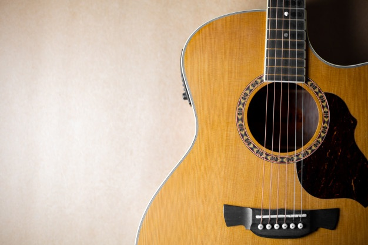

GUITARRA
A guitarra é eletronicamente amplificada. Isso quer dizer que o som produzido pela vibração das cordas é transformado em sinal elétrico por meio de captadores magnéticos. Esses captadores transformam os sons em ondas elétricas. As cordas costumam ser de náilon ou de aço, e em geral os músicos usam palhetas para tocá-las. A guitarra tem uma função unica, que é solar as músicas, se destaca pelo seu som agúdo, e pelos sons que podem ser amplificados

VIOLÃO
O violão é composto por três partes principais: a cabeça, o braço e o corpo. A cabeça (às vezes também chamada de mão) é fixada na ponta do braço. De cada lado da cabeça ficam peças chamadas cravelhas (ou tarraxas), nas quais as cordas são enroladas. Há uma cravelha para cada corda. Para afinar o instrumento, o músico gira as cravelhas para um lado ou para o outro. O braço é fixado ao corpo do violão. Ao longo dele, há uma série de filetes verticais chamados trastes. Os trastes dividem o braço em casas. As diferentes casas ajudam o violonista a produzir diferentes notas musicais e acordes. O violão tem uma característica
BATERIA
A bateria é um conjunto de tambores e de pratos e outros instrumentos de percussão colocados de forma conveniente com a intenção de serem percutidos por um único músico, denominado baterista


BAIXO
A guitarra baixo, mais conhecida apenas como baixo, serve para executar as linhas musicais mais graves ou baixas. Existem baixos elétricos e acústicos.
O baixo elétrico é parecido com a guitarra elétrica, embora maior, com braço mais longo e escala mais extensa. O baixo costuma ter quatro cordas. Esse instrumento apareceu nos anos 1950 e logo começou a ser utilizado por músicos de jazz e rock para substituir o contrabaixo, bem maior e mais difícil de transportar. Existem várias maneiras de tocar o baixo. Por exemplo, o tapping consiste em bater nas cordas com a ponta dos dedos; no slap, o músico puxa as cordas; no pizzicato, as cordas são dedilhadas.
TECLADO
O teclado é um instrumento musical de teclas temperado, no qual se executam melodias e notas, formando uma harmonia. É composto por um conjunto de teclas adjacentes pretas e brancas, que quando pressionadas produzem os sons. O músico que executa instrumentos de teclado chama-se teclista ou tecladista